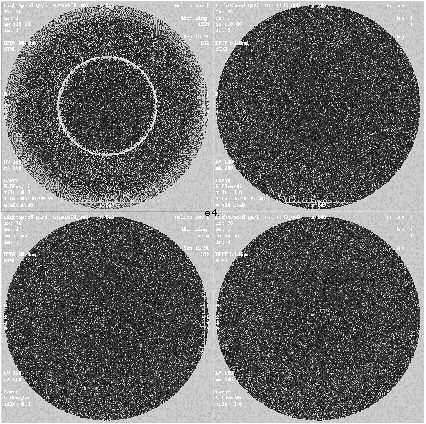
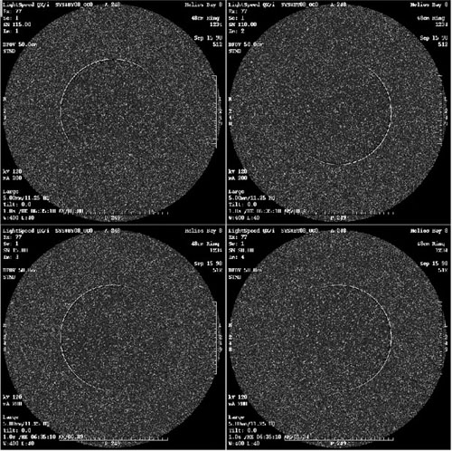
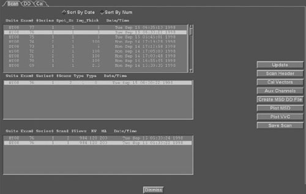
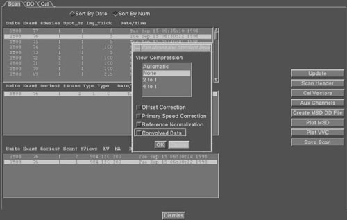
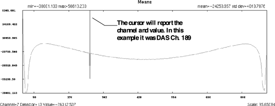
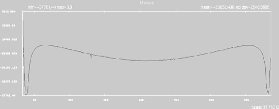

Proprietary to General Electric
Direction 5114043-800, Rev# 9
LightSpeed 3.X Service Methods (Advanced)
Proprietary to General Electric |
Illustration 1: Example shows a single Ring in 1 image of the 4

Illustration 2: Example of Bad Channel in Helical Image Series

Troubleshoot Ring Artifacts in a Helical series by duplicating the problem in a Axial Mode.
If the Helical data is used to troubleshoot, the bad data can be in any row since all 8 rows of data are used to produce a Helical image and the number of views to produce a helical image are weighted differently based on table speed and pitch.
Note that the Helical images are a result of the same bad DAS Channel as the Above Axial example. The hard ring in the Axial example appears as partial arcs in the Helical images.
| Scan Type | Axial | In a Axial mode, there are several options relative to scanning and displaying images, either 8 x i, 4 x i or 2 x I (where i = thickness) |
| In a 8 x i mode, images are created from the rows used as indicated by slice thickness. This mode should always be used to troubleshoot Detector / DAS related artifacts! | ||
| In a 4 x i or 2 x i mode, Recon actually combines 2 or more rows of data to produce a thicker slice. | ||
| Helical | Images are created using data from all Rows used during data acquisition. (The actual rows being dependent on slice thickness) The amount of data used to reconstruct a image from a row, or row weighting is dependent on table speed. | |
| Head First or Feet First (Images are view from Image Works Desktop.) | Head First & I to S | Image 1 consists of the Data in Row 4A |
| Image 2 consists of the Data in Row 3A | ||
| Image 3 consists of the Data in Row 2A | ||
| Image 4 consists of the Data in Row 1A | ||
| Image 5 consists of the Data in Row 1B | ||
| Image 6 consists of the Data in Row 2B | ||
| Image 7 consists of the Data in Row 3B | ||
| Image 8 consists of the Data in Row 4B | ||
| Feet First & I to S | Image 1 consists of the Data in Row 4B | |
| Image 2 consists of the Data in Row 3B | ||
| Image 3 consists of the Data in Row 2B | ||
| Image 4 consists of the Data in Row 1B | ||
| Image 5 consists of the Data in Row 1A | ||
| Image 6 consists of the Data in Row 2A | ||
| Image 7 consists of the Data in Row 3A | ||
| Image 8 consists of the Data in Row 4A | ||
| Slice Thickness | 4 x 1.25 | Uses 4 Center rows of the Detector (D2, D1, D1, D2) |
| 4 x 2.50 | Uses 8 Center rows of the Detector (D4+D3, D2+D1, D1+D2, D3+D4) | |
| 4 x 3.75 | Uses 12 Center rows of the Detector (D6+D5+D4, D3+D2+D1, ...) | |
| 4 x 5.00 | Uses 16 Center rows of the Detector (D8+D7+D6+D5, D4+D3+D2+D1,...) | |
| 8 x 1.25 | Uses 8 Center rows of the Detector (D4, D3, D2, D1, D1, D2, ...) | |
| 8 x 2.50 | Uses 16 Center rows of the Detector (D8+D7, D6+D5, D4+D3, ...) | |
| Technique | kV vs. Slice Thickness | The DAS Converter boards have 31 pre-amp gains that are selected by selected technique. These gains are not User selectable, however it’s important to know if a Artifact only appears at the same pre-amp gain. The pre-amp gain used can be found within the scan header by using Scan Analysis. |
| Focal Spot Size | Small vs. Large | Technique dependent small spot ≤ 24KW, Large spot > 24KW |
| Calibration used | Small vs. Large | Needed to know if artifact may be caused by cal vectors |
In the Example shown in Illustration 1, just by knowing the scan series was an Axial, 4 x 5.00 Mode, and was done Head first (Annotation of image vs. Table location), it can be determined that the Ring is probably in Row 2A of the Scanfile.
This can be confirmed by using Scan Analysis and plotting the Means & Standard Deviations (MSD) of the selected Exam, Series, and Scan Number.
Elastomer
DAS Converter Board
DAS Control Board (DCB)
DAS Backplane (chassis)
Detector
From the Service Desktop, select [TOOLBOX/UTILITIES] and then [TOOLS] .
Select [SCAN ANALYSIS] .
The GUI screen shown in Illustration 3 will appear.
Select the Exam number, Series, and Scan number. Remember that one scan in a 8 x i mode is made up of eight Data sets (or rows), which produces eight images. In this example, images 1 through 8 are created from scan 1.
Once the scan is highlighted, select [PLOT MSD] The GUI screen shown in Illustration 4 will appear.
Leave the compression defaulted to None, but choose convolved Data which will identify the ring type artifact better in the plot. Select OK.
The Scan Analysis Tool will first plot Row 4A, but any of the 8 rows Means and Std. Deviations can be viewed by selecting the tabs. (See Illustration 5, for Means Example.)
Select the tab which indicates the row where the ring is expected based on initial observations. It may be necessary to adjust the level to find a spike in the data, or view other rows looking for any abnormal spikes.
In Row 2A, the ring is apparent with a large spike in the data on channel 189. (See Illustration 6, for Row 2A Example.) Row 1A has a small spike also on channel 189 which is a result of capacitive discharge from row 2b channel 189. The small spike can be ignored as a product of the major spike on row 2B. Rows 1B and 2B look normal, no spikes.
Now the Ring has been verified it is on Row 2B and is on DAS Channel 189.
From Scan Analysis, the Cal vectors can be plotted to see if the bad DAS channel is present.
Determine if the ring is caused by a particular acquisition mode by scanning a phantom using different modes or slice thickness’. The above example was scanned in a 4 x 5.00 mode and the ring was on Row 2A, therefore, the Detector rows or diodes used were D8+D7+D6+D5 to produce row 2A. If another scan was taken at 4 x 1.25 mode, then the first image, or row 2A data would be acquired from Detector row D2. If the ring was a hard problem (consistent every time) and now after changing slice thickness, the ring was gone, the ring may have been caused by a suspect detector. Refer to further detector verification before replacing the detector. If the ring was still present, the problem could still be the detector, but may be a DAS board or elastomer interface connection.
By using the DAS / Detector Architecture Tool, found in the pull-down menu under File, select the tool.
A window appears and prompts for Detector Row and DAS channel. The program will display the associated DAS Converter board, Detector channel, module number, elastomer number, and other important information.
Find the associated DAS converter board number. If multiple rings, look for pattern (Converter Bd, Row,...)
Record the failing Channel and Row.
Illustration 3: Scan Analysis GUI

Illustration 4: PLOT MSD GUI

Illustration 5: Means Example

Illustration 6: Row 2A Example

Swap the suspect Converter board with a board that is 4 boards away.
Repeat Scan & Analyze.
If the bad channel follows bd. replace the board.
If the bad channel stays at same location:
Replace the elastomer associated with the failing channel. The elastomer number is found within the information given using the DAS/Detector Architecture Tool.
PASS: No more Ring, problem is fixed.
Fails: Same bad channel fails, run x-ray verification test. If x-ray verification test fails, see x-ray verification Troubleshooting Job Card
END LEVEL 1, ON SITE TROUBLESHOOTING
Collect all data gathered during the above procedures.
Escalate problem.